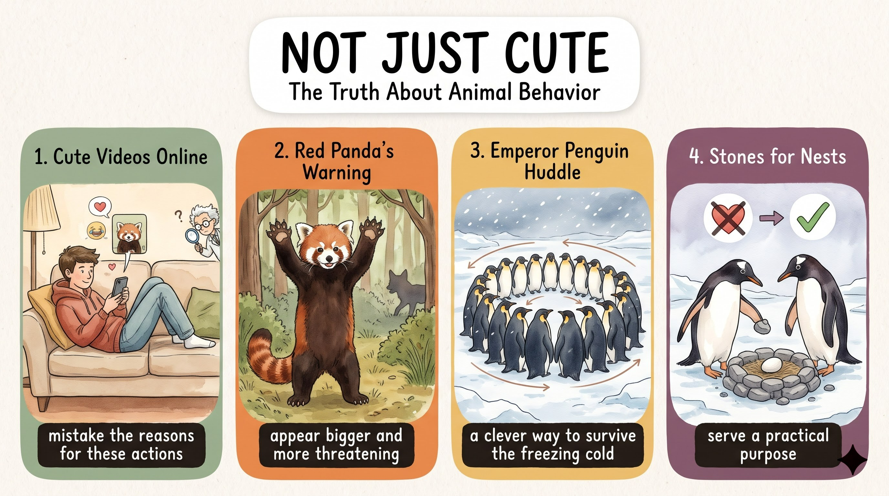

人們愛分享動物看似可愛的影片，但科學家指出，我們常誤解這些舉動的真正原因。
mistake the reasons for these actions紅貓熊感到威脅時會站起來張開爪子，讓自己看起來更大、更可怕，嚇跑掠食者。
appear bigger and more threatening南極的皇帝企鵝圍成一圈，外圈往內、內圈往外輪替，沒有一隻在最冷處待太久。
a clever way to survive the freezing cold企鵝把石頭放在伴侶腳邊，其實是要築巢讓蛋保持乾燥。可愛背後，往往有重要的目的。
serve a practical purposePeople (S) + love (V) + sharing videos of animals online (O)，especially when 子句補充情境。
appear to be doing 是進行式不定詞，表示「看起來正在做」。
especially when ... 是時間副詞子句，especially 只是加強 when 的副詞；appear to V 的 appear 是連綴動詞。
appear to be V-ing 不寫成 appear doing；sweet 在此指「可愛、討喜」，不是「甜」；love V-ing＝love to V。
People love sharing videos of animals online,（主幹）especially when（從屬連接詞）they appear to be doing（副詞子句主幹）something sweet or funny.（受詞＋後位形容詞）語塊 1（人們喜歡在網路上分享動物影片）➔ 語塊 2（尤其是當）➔ 語塊 3（牠們看起來正在做）➔ 語塊 4 形容詞提前（可愛或好笑的事情）➔ 時
這句主句在前、情境在後，先把主句翻完，再接「尤其是當……時」。
People love sharing videos of animals online，而且左邊沒有時間名詞；往右邊看——they appear to be doing something ... 也是完整句。左右都完整、左邊又沒有先行詞，when 就不是關係副詞，而是副詞子句連接詞，負責交代「在什麼情況下」。especially 只是副詞，負責加強語氣。考場看到 especially when／especially because／especially if，真正的連接詞永遠是後面那個字。
appear to V＝seem to V；appear to be V-ing：He appears to be sleeping.（他看起來正在睡覺）S love V-ing ..., especially when ...，先講普遍現象再聚焦特定情況。scientists (S) + point out (V) + that 子句 (O)，who study animal behavior 修飾 scientists。
who 是主格關代修飾 scientists；that 引導名詞子句當 point out 的受詞；However 是轉折副詞。
point out that＋完整句；mistake the reasons for N＝誤解……的原因（mistake 是動詞，不是名詞「錯誤」）；reasons for，不是 reasons of。
However,（轉折副詞）scientists who study animal behavior（主詞＋主格關代子句）point out that（動詞片語＋名詞子句引導詞）we often mistake the reasons for these actions.（名詞子句（受詞））語塊 1（然而）➔ 語塊 2 關代提前（研究動物行為的科學家）➔ 語塊 3（指出）➔ 語塊 4（我們常常誤解這些舉動背後的原因）
先翻 However「然而」，接著找出真正的主詞和動詞：主詞是 scientists，動詞是 point out，中間的 who study animal behavior 是修飾。
However：句首加逗號，是轉折副詞，只負責和上一句做對比，不連接任何子句。who：眼睛往左看——是名詞 scientists（先行詞）；往右看——___ study animal behavior 缺主詞。名詞後面＋缺主詞，who 就是主格關代，整串只在說明「哪一種科學家」。that：眼睛往左看——是動詞片語 point out，沒有先行詞；往右看——we often mistake the reasons ... 主詞動詞受詞齊全。動詞後面接一件完整的事，that 是名詞子句的引導詞。point out，study 屬於 who 子句。
point out that S + V＝indicate that；mistake A for B：把 A 誤認為 B。However, experts point out that ... 轉出真相，結構清楚。An animal (S) + might look (V) + happy or friendly (C)。
is actually feeling 是現在進行式，描述當下真實的感受。
even when 引導讓步副詞子句「即使在……時候」；look 是連綴動詞，後接形容詞。
look＋Adj.：friendly 雖然字尾 -ly，卻是形容詞；actually 放在 be 動詞與 V-ing 之間。
An animal might look happy or friendly,（主幹）even when（讓步從屬連接詞）it is actually feeling（副詞子句主幹）something different.（受詞＋後位形容詞）語塊 1（一隻動物可能看起來很開心或友善）➔ 語塊 2（即使）➔ 語塊 3（牠其實正感受著）➔ 語塊 4 提前（截然不同的情緒）
主句先翻：「一隻動物可能看起來很開心或友善」，後面的 even when 直接翻「即使」接上。
An animal might look happy or friendly 是完整主句；往右邊看——it is actually feeling something different 也完整。左右都完整，even when 就是副詞子句連接詞。especially when 比一比：especially 是「尤其」、加碼；even 是「即使」、讓步。兩個字都只是修飾 when 的副詞，結構一模一樣，語氣一個加碼、一個唱反調。look 和 actually：前面說「看起來」，後面說「其實」，正是整篇文章「表象 vs. 真相」的主軸。
look／seem／appear＋Adj.；friendly、lovely、lonely 都是 -ly 形容詞。A may look ..., even when it is actually ...。they (S) + stand up (V1) and raise (V2) + their front paws (O)。
When 引導時間副詞子句；feel threatened 是連綴動詞＋過去分詞形容詞；and 連接兩個動詞。
feel threatened（受到威脅）vs. threatening（具威脅性）；stand up on one's back legs＝用後腳站起來；high in the air＝高舉向空中。
When red pandas feel threatened by a predator,（時間副詞子句）they stand up on their back legs（主幹動詞 1）and raise their front paws（主幹動詞 2）high in the air.（地方副詞片語）語塊 1（當紅貓熊感受到掠食者的威脅時）➔ 語塊 2（牠們會用後腳站起來）➔ 語塊 3（並把前掌）➔ 語塊 4（高高舉向空中）
這句從 When 子句開始翻，中文的時間、條件本來就放在前面，直接照順序：「當紅貓熊感受到掠食者的威脅時」。
When：在句首，後面 red pandas feel threatened by a predator 是完整句，接著逗號，再出現主句 they stand up。句首 When 子句＋逗號＋主句，這是最標準的時間副詞子句。and：眼睛往左看——stand up；往右看——raise。兩邊都是動詞、主詞都是 they，and 只是把兩個動作接起來，後面不必再寫 they。feel threatened 寫成 feel threatening。紅貓熊是「被嚇到的那一方」，用 -ed；下一段的 more threatening 是牠「讓別人害怕」，才用 -ing。
feel threatened／scared／confused：感受者用 -ed。S + V1 ... and V2 ...，省略第二個主詞讓句子更緊湊。this (S) + looks like (V) + 子句，and videos and memes (S) + have become (V) + widely popular (C)。
have become 現在完成式：從過去累積到現在的結果。
look like＋子句（like＝as if）；or 連接 wants 與 is waving；as a result 是副詞片語；that 主格關代修飾 videos and memes。
as a result 不是連接詞，前面要有 and 或句號；wave hello＝揮手打招呼；meme 固定譯「迷因」。
To humans,（介系詞片語（觀點））this looks like the red panda wants a hug or is waving hello,（主句 1）and as a result,（對等連接詞＋副詞片語）videos and memes that show this behavior（主詞＋主格關代子句）have become widely popular online.（主句 2 動詞＋補語）語塊 1（在人類看來）➔ 語塊 2（這就像紅貓熊想要擁抱或在揮手打招呼）➔ 語塊 3（因此）➔ 語塊 4 關代提前（呈現這種行為的影片和迷因）➔ 語塊 5（在網路上廣為流行）
句首 To humans 交代「誰的觀點」，先翻「在人類看來」，再接前半句「這就像紅貓熊想要一個擁抱或在揮手打招呼」。
this looks like the red panda wants a hug or is waving hello：look like 後面接完整句，這裡的 like 等於 as if（好像）；or 連接 wants 和 is waving，主詞都是 the red panda。and as a result：真正連接兩個句子的是 and；as a result 只是副詞片語，標示「因此」。學測最愛考：..., as a result, ... 前面如果沒有 and 或句號，就是逗號連句的錯誤。that：眼睛往左看——是名詞 videos and memes；往右看——___ show this behavior 缺主詞。名詞＋缺主詞 ➔ 主格關代。所以第二句的動詞是 have become，不是 show。
as a result＝therefore＝consequently（副詞）；as a result of N（因為……）。..., and as a result, ... 或 ... . As a result, ...，兩種標點都對。Most people (S) + find (V) + the pose (O) + cute (OC)。
without realizing 是介系詞片語；what it actually means 是名詞子句，當 realizing 的受詞。
find＋O＋Adj.（覺得……很……），中間不加 is；without＋V-ing；what 子句用直述句語序，不寫 what does it mean。
Most people find the pose cute（主幹（S＋V＋O＋OC））without realizing（介系詞片語）what it actually means.（名詞子句（受詞））語塊 1（大多數人覺得這個姿勢很可愛）➔ 語塊 2（卻沒有意識到）➔ 語塊 3（它真正的意義）
這句完全照順序翻，主幹「大多數人覺得這個姿勢很可愛」，後面 without 片語接成「卻沒有意識到……」。
Most people find the pose cute 一口氣說完：find 後面先放受詞 the pose，再放形容詞 cute 補充「覺得它怎樣」，中間不需要 that 或 is。without realizing 是介系詞片語外掛，不是子句——without 是介系詞，所以後面接 V-ing。what：眼睛往左看——是動名詞 realizing，沒有先行詞；往右看——it actually means ___ 缺 means 的受詞。動詞後面接一件事、右邊缺受詞 ➔ what 名詞子句。最常見的錯是寫成 what does it mean，那是問句語序，放在句子裡要改回 what it means。
find＋O＋Adj.：I find the book interesting.；without＋V-ing：He left without saying goodbye...., without realizing that ... 很適合寫「人們忽略了某事」的論點句。red pandas (S) + do (V) + this (O)。
only when 引導時間副詞子句，把條件限縮成「只有這種時候」；In fact 是副詞片語。
sense 在此是及物動詞「察覺」；nearby 是副詞，放在名詞後；Only when 放句首時主句要倒裝。
In fact,（副詞片語）red pandas do this（主幹）only when（從屬連接詞（限定條件））they sense danger nearby.（副詞子句）語塊 1（事實上）➔ 主詞（紅貓熊）➔ 語塊 3＋4 提前（只有在察覺附近有危險時）➔ 語塊 2 壓軸（才會這麼做）
In fact 先翻「事實上」，接著把主詞「紅貓熊」放出來，但動作 do this 要留到最後。
red pandas do this 完整；往右看——they sense danger nearby 也完整。左右都完整，when 是副詞子句連接詞，前面的 only 把條件縮小成「只有這種時候」。Only when they sense danger nearby do red pandas do this. 作文用上一次，閱卷老師就知道你懂。In fact 是副詞片語，負責「補充真相」，不連接任何東西。
sense danger＝feel／notice danger；Only when ... ＋倒裝句。In fact, S only V when ... 可以用來推翻常見誤解。they (S) + try (V) + to appear ... (O)。
are 是比較子句裡的現在式。
By＋V-ing 是介系詞片語表手段；than they really are 是比較子句；兩個 and 分別連接 V-ing 與比較級。
much＋比較級（very 不能修飾比較級）；多音節 threatening 用 more；than they really are 句尾省略了 big and threatening。
By standing tall and spreading their sharp claws,（介系詞片語（手段））they try to appear（主幹）much bigger and more threatening（比較級補語）than they really are.（比較子句）語塊 1（藉由挺直站立並張開銳利的爪子）➔ 語塊 2（牠們試圖讓自己看起來）➔ 語塊 4 提前（比實際上）➔ 語塊 3（更龐大、更具威脅性）
句首的 By 片語是手段，中文手段本來就在結果前面，直接順翻「藉由挺直站立並張開銳利的爪子」。
By standing ... and spreading ...：by 是介系詞，後面兩個動作都用 V-ing，and 把兩個 V-ing 並排。這是「介系詞外掛背包」，不是子句，所以前面不用主詞。and：連接 much bigger 和 more threatening 兩個比較級——單音節加 -er、多音節加 more，規則各自套。than：右邊 they really are ___ 後面空著，少了 big and threatening，英文為了避免重複直接省略。考場看到 than they are／than it was 這種句尾空著的 be 動詞，就是省略了比較的內容。
much／far／even／a lot＋比較級；very 不能修飾比較級。By V-ing, S can ... 是說明「方法」的高分句型：By reading every day, you can ...This (S) + helps (V) + them (O) + scare away possible dangers (OC)。
help＋O＋原形 V；scare away 是片語動詞。
help sb (to) V，不接 V-ing；scare away 可分離：scare them away；possible dangers 指掠食者、天敵。
This helps them（主幹）scare away（片語動詞（受詞補語））possible dangers.（受詞）語塊 1（這有助於牠們）➔ 語塊 2（嚇跑）➔ 語塊 3（潛在的威脅）
這句很短，完全照順序翻：「這有助於牠們嚇跑潛在的威脅」。
This helps。很多同學會寫成 helps them scaring away——help 後面接受詞，再接原形動詞（to 可有可無），但絕不接 V-ing。This 是代名詞，指整個「站高、張爪、裝大」的動作，像一條隱形接繩，讓這句不用 and 或 so 就能接上前一句。寫作時用 This helps ...／This allows ... 承接，比一直寫 and so 高級得多。
scare away＝frighten away＝drive away；可分離：scare them away。This helps sb V ... 是承接上一句的好用句。it (S) + is (V) + simply a survival strategy (C)。
Even though 引導讓步副詞子句；for the red panda 是表立場的介系詞片語。
Even though／Although 不與 but 連用；survival 是名詞修飾名詞（survival strategy）；simply 在此是「純粹」，不是「簡單地」。
Even though it looks charming on the Internet,（讓步副詞子句）for the red panda,（介系詞片語（觀點））it is simply a survival strategy.（主幹）語塊 1（雖然這在網路上看起來很討喜）➔ 語塊 2（但對紅貓熊來說）➔ 語塊 3（這純粹是一種求生策略）
從 Even though 子句開始翻，中文讓步一樣放前面：「雖然這在網路上看起來很討喜」。
Even though it looks charming on the Internet——在網路上看起來確實很討喜（先承認表象）。it is simply a survival strategy——對紅貓熊來說，這只是求生（真相）。for the red panda 是介系詞片語插在主句前面，交代「站在誰的立場」，不是連接詞。Even though ..., but it is ...。英文一句只要一個連接詞，Even though 已經在了，就不能再放 but；中文翻譯時反而要補「但」。
Even though＝Although＝Though（連接詞）；despite／in spite of＋N（介系詞）。Even though ..., it is simply ... 收束，能同時呈現表象與真相。Penguins (S) + are (V) + another animal (C)，whose 子句修飾 animal。
is mistaken：陳述普遍事實。
whose 是所有格關代，後面緊接名詞 behavior；be mistaken for 是 mistake A for B 的被動。
Penguins are another animal（主幹）whose behavior（所有格關代＋名詞）is easily mistaken for something else.（關代子句動詞（被動））語塊 1（企鵝是另一種）➔ 語塊 2＋3 提前（行為很容易被誤認為別的意思的）➔ 動物
主幹先抓出來：「企鵝是另一種動物」，但中間要塞進 whose 子句。
another animal（先行詞）；往右邊看——緊接著一個名詞 behavior，再接動詞 is mistaken。名詞＋whose＋名詞，這就是所有格關代：「那種動物的行為」。who's，那是 who is 的縮寫，聽起來一樣，意思完全不同。
mistake A for B ➔ A be mistaken for B；whose＋N 先行詞可以是人或物。S is another N whose ... 很適合寫「再舉一例」的段落開頭。thousands of emperor penguins (S) + stand (V) + close together。
's known as 是現在簡單式被動。
that's known as a huddle 是主格關代子句修飾 circle；其餘全靠介系詞片語（In winter／in Antarctica／in a giant circle）。
thousands of＋複數 N；be known as（被稱為）vs. be known for（以……聞名）；huddle 固定譯「抱團」。
In winter,（時間副詞片語）thousands of emperor penguins in Antarctica（主詞＋地點修飾）stand close together（動詞）in a giant circle（介系詞片語（方式））that's known as a huddle.（主格關代子句）語塊 1（冬天時）➔ 語塊 2（南極洲成千上萬隻皇帝企鵝）➔ 語塊 3（會緊靠在一起）➔ 語塊 4（圍成一個）➔ 語塊 5 提前（被稱為「抱團」的）➔ 巨大圓圈
時間 In winter 先翻「冬天時」，再處理一長串主詞。
a giant circle；往右邊看——___ 's known as a huddle 缺主詞（'s＝is）。名詞＋缺主詞 ➔ 主格關代 that。be known as＋名稱（被稱為）、be known for＋特色（以……聞名）、be known to＋人（為……所知），介系詞一換意思就變。
thousands of＋複數 N；數字後的 thousand 不加 s：three thousand penguins。a N that's known as ...／..., which is known as ...。it (S) + is (V) + a clever way (C)。
While 是讓步連接詞「雖然」；to survive 是不定詞的形容詞用法，修飾 way。
survive＋N（熬過）不加 from；freezing cold＝酷寒。
While this may look like a group hug,（讓步副詞子句）it is actually a clever way（主幹）to survive the freezing cold.（不定詞（形容詞用法））語塊 1（雖然這看起來可能像是集體擁抱）➔ 語塊 2（但其實是）➔ 語塊 3 提前（熬過酷寒的）➔ 聰明方法
從 While 子句開始翻，這裡的 While 是「雖然」：「雖然這看起來可能像是集體擁抱」。
actually／in fact 或相反意見 ➔ 讓步「雖然」。this may look like a group hug（看起來像擁抱，先承認）it is actually a clever way to survive（其實是求生，這才是重點）to survive 是不定詞修飾 way，不是連接詞。
While＝Although（讓步）；survive＋N（熬過），不寫 survive from。While A may seem ..., it is actually ... 是議論文反駁的萬用句。The penguins on the outside (S1) + move (V1)，and those in the center (S2) + move (V2)。
and 連接兩個主句；so that 引導目的副詞子句；those 代替 the penguins。
so that（目的：好讓）vs. , so（結果：所以）；no single＋N＝沒有任何一個；inward ↔ outward。
The penguins on the outside slowly move inward,（主句 1）and those in the center move outward,（主句 2）so that（目的連接詞）no single bird stays in the coldest spot for too long.（目的副詞子句）語塊 1（外圍的企鵝會慢慢往內移動）➔ 語塊 2（而中間的企鵝則往外移動）➔ 語塊 3（好讓）➔ 語塊 4（沒有任何一隻企鵝在最冷的位置待太久）
這句照順序翻就行：兩個相反的動作先講，最後用「好讓」交代目的。
and：左邊 The penguins on the outside slowly move inward，右邊 those in the center move outward，兩邊都是完整句，and 把一進一出兩個動作並排。右邊的 those 是代名詞，代替 the penguins，避免重複。so that：右邊 no single bird stays ... 是完整句，交代「這樣做是為了什麼」。so that 是「目的」（為了讓），, so 是「結果」（所以）。看動作是不是「有意安排」——企鵝輪流換位，是刻意要讓大家都不會凍太久，所以用 so that。
so that＝in order that；主詞相同時可改 in order to／so as to＋V。A do X, and those ... do Y, so that ...。The actions (S) + may be misunderstood (V)。
may be＋p.p.。
misunderstand–misunderstood–misunderstood；助動詞後的被動不能漏 be；types of penguin 用單數 penguin 指物種。
The actions of other types of penguin（主詞）may also be misunderstood.（被動動詞）語塊 1 of 片語提前（其他種類企鵝的舉動）➔ 語塊 2（也可能被誤解）
這句很短，先把主詞的 of 片語反過來翻，再接動詞。
The actions ... may be misunderstood。主詞後面的 of other types of penguin 是兩層 of 片語，像外掛背包一樣疊在 actions 後面，但它們都只是修飾，真正的主詞是 actions，所以動詞看複數（換成現在式就是 are）。may／can／will＋be＋p.p.，常見錯誤是漏掉 be 寫成 may misunderstood。
mis-＝錯：misunderstand、mislead、mistake。The actions of ... may also be misunderstood. 當段落主題句，承上啟下。Gentoo and Adélie penguins (S) + collect ... and place ...，and many people (S) + believe (V) + (that) 子句。
believe／think (that) S + V；at one's feet＝在某人腳邊；Gentoo 固定譯名「巴布亞企鵝」。
Gentoo and Adélie penguins（主詞）collect small stones and place them at a partner's feet,（主句 1 動詞）and many people believe（對等連接詞＋主句 2）this is a romantic gift.（名詞子句（省略 that））語塊 1（巴布亞企鵝和阿德利企鵝）➔ 語塊 2（會收集小石頭，並把它們放在伴侶的腳邊）➔ 語塊 3（許多人認為）➔ 語塊 4（這是一份浪漫的禮物）
這句照順序翻：先講企鵝做了什麼，再講人們怎麼想。
and：左邊 collect、右邊 place，連接兩個動詞，主詞都是企鵝。and：左邊是整句 Gentoo and Adélie penguins ... feet，右邊出現新主詞 many people believe ...，連接兩個完整子句。看 and 後面有沒有新主詞，就知道它連的是動詞還是句子。(that)：眼睛往 believe 右邊看——this is a romantic gift 是完整句。及物動詞後面接完整句，中間的 that 被省略，這就是名詞子句的「隱形掛鉤」。
believe／think／say (that) S + V，that 常省略。Many people believe (that) ..., but in reality ...。the stones (S) + serve (V) + a practical purpose (O)，破折號後是補充說明的完整句 penguins use them to build nests。
In reality 是副詞片語；破折號負責放大說明；that 主格關代修飾 nests；keep＋O＋Adj.。
serve a (Adj.) purpose＝有……用途；use A to V＝用 A 來做……；keep their eggs safe and dry（keep＋O＋形容詞）。
In reality,（副詞片語）the stones serve a practical purpose（主句）—penguins use them to build nests（破折號補充＋不定詞（目的））that keep their eggs safe and dry（主格關代子句）above the icy ground.（地方片語）語塊 1（實際上）➔ 語塊 2（這些石頭有實際的用途）➔ 語塊 3（企鵝用它們築巢）➔ 語塊 4（讓蛋）➔ 語塊 5 提前（在結冰的地面上方）➔ 保持安全與乾燥
In reality 先翻「實際上」，接著主句「這些石頭有實際的用途」，破折號後面就是用途的說明。
In reality：副詞片語，負責推翻上一句「浪漫禮物」的說法。—：它不是連接詞，卻是這句的關鍵——前面說「有實際用途」太抽象，破折號後面立刻放大說明「用途是什麼」：築巢。這就是「破折號案情放大鏡」，作文用一次，比硬接 because 或 and 精緻得多。that：眼睛往左看——是名詞 nests；往右看——___ keep their eggs safe and dry 缺主詞。名詞＋缺主詞 ➔ 主格關代。keep＋受詞＋形容詞：讓蛋保持安全、乾燥。
serve a purpose＝be useful；serve the purpose of N／V-ing。S + V a purpose—S + V ...，先抽象再具體，論證更有力。These examples (S) + remind (V) + us (O) + to be careful (OC)。
are doing 現在進行式描述動物正在進行的動作。
when 引導時間副詞子句；think 後省略 that；what animals are doing 是名詞子句。
remind sb to V（提醒做）／of N（使想起）／that 子句（提醒某事）；what 子句用直述句語序。
These examples remind us（主幹）to be careful（不定詞（受詞補語））when we think（時間副詞子句）we understand what animals are doing.（名詞子句（省略 that）＋what 子句）語塊 1（這些例子提醒我們）➔ 語塊 3＋4 提前（當我們自認為了解動物在做什麼時）➔ 語塊 2 壓軸（要格外謹慎）
主幹「這些例子提醒我們」先翻，但提醒的內容 to be careful 要先等一下。
when：左邊 These examples remind us to be careful 完整，右邊 we think ... 也完整 ➔ 副詞子句，交代「什麼時候要小心」。(that)：think 是及物動詞，右邊 we understand ... 是完整句，中間省略 that ➔ 名詞子句當 think 的受詞。what：左邊是動詞 understand，沒有先行詞；右邊 animals are doing ___ 缺 doing 的受詞 ➔ what 名詞子句。remind us to be careful 是「提醒我們要做」，換成 remind us of ... 是「使我們想起」，remind us that ... 是「提醒我們某件事」。
remind sb to V／not to V／of N／that S + V。These examples remind us to ...，從例子收斂到啟示。Something (S) + may have (V) + an important purpose (O)。
that looks simply cute or entertaining 是主格關代子句修飾 Something；from 片語與 for 片語分別交代觀點與對象。
point of view 複數 points of view；in the wild＝在野外。
Something（主詞）that looks simply cute or entertaining（主格關代子句）from a human point of view（介系詞片語（觀點））may have an important purpose（主句動詞＋受詞）for the animal in the wild.（介系詞片語（對象））語塊 3 提前（從人類的角度看來）➔ 語塊 2 提前（單純可愛或有趣的）➔ 語塊 1（事物）➔ 語塊 5 提前（對野生動物來說）➔ 語塊 4 壓軸（可能有著重要的目的）
這句要先找出主幹：Something ... may have an important purpose，中間的 that 子句是修飾。
Something（先行詞）；往右看——___ looks simply cute ... 缺主詞 ➔ 主格關代。所以 looks 屬於 that 子句，不是全句的動詞。that looks simply cute or entertaining from a human point of view 整串蓋起來，剩下 Something ... may have an important purpose——主詞 Something，動詞 may have。from one's point of view＝from one's perspective；複數 points of view。Something that looks ... may have ...，用關代主詞寫出普遍道理。appear 當連綴動詞「看起來、似乎」| 句型 | 課文／例句 |
|---|---|
| appear + to V. | 課文：when they appear to be doing something sweet or funny The stars appear to shine more brightly tonight. |
| appear + (to be) Adj./N. | 課文：they try to appear much bigger and more threatening The man appears to be nervous onstage. |
appear to V＝seem to V。
mistake 當動詞（mistake–mistook–mistaken）| 句型 | 意思 | 例句 |
|---|---|---|
| mistake + N | 誤解…… | 課文：we often mistake the reasons for these actions I mistook the meaning of his email. |
| mistake A for B | 把 A 誤認為 B | The clerk mistook Nicholas for a local student. |
| A be mistaken for B | A 被誤認為 B | 課文：whose behavior is easily mistaken for something else |
actually vs. in fact vs. in reality| 語氣與用途 | 課文／例句 | |
|---|---|---|
| actually 其實 | 最口語、最廣泛；糾正錯誤、補充、委婉提出不同意見 | 課文：even when it is actually feeling something different Although this fruit smells terrible, it is actually quite tasty. |
| in fact 事實上 | 補充說明或加強前述內容，可帶出意外或對比資訊 | 課文：In fact, red pandas do this only when they sense danger nearby. Doris moved to Japan. In fact, she has been there for almost two years now. |
| in reality 實際上 | 著重「表面印象 vs. 真實情況」，語氣最強 | 課文：In reality, the stones serve a practical purpose People say I look like I'm in my 20s, but in reality, I'm 32. |
whose• 課文：Penguins are another animal whose behavior is easily mistaken for something else.
• Ricky is looking after a dog whose leg was hurt.（瑞奇正在照顧一隻腿受傷的狗）
| 關代後面的樣子 | 選 |
|---|---|
| 直接接名詞（有「的」的關係） | whose |
| 缺主詞 | who／which／that |
| 缺受詞 | whom／which／that（可省略） |
serve a (Adj.) purpose「有……用途」• 課文：In reality, the stones serve a practical purpose.
• These boxes may look old, but they still serve a purpose.
• 延伸：serve the purpose of N／V-ing；on purpose（故意）；for the purpose of V-ing（為了……）
remind 的四種句型| 句型 | 意思 | 例句 |
|---|---|---|
| remind sb to V. | 提醒某人要做某事（課文用法） | 課文：These examples remind us to be careful ... Can you remind Tom to bring his notebook tomorrow? |
| remind sb not to V. | 提醒某人不要做某事 | Mom reminded me not to be late. |
| remind sb of sth | 使某人想起某事物 | The warm soup reminds me of winter evenings. |
| remind sb that S + V. | 提醒某人某事 | Our teacher reminded us that we have a test on Friday. |
| 課文用字 | 說明 |
|---|---|
| sweet | 可愛的、討喜的、溫馨的（不是「甜的」） |
| point out (that) | 指出，後接 sth 或 that 子句 |
| as a result | 副詞片語「因此；結果」，可放句首或句尾；meme [mim] 迷因、梗圖 |
| sense | 及物動詞「察覺、感覺到」：sense danger |
| scare away | 嚇跑、驅趕；possible dangers＝潛在威脅（掠食者、天敵等） |
| survival | 名詞「生存」，常置於名詞前：survival strategy |
| while | 在此指「雖然、儘管」 |
| those | 代指 those penguins |
| so that | 表目的「以便……；為了讓……」 |
| misunderstand | mis-（錯）＋understand；三態 misunderstand–misunderstood–misunderstood |
| point of view | 觀點、角度；複數 points of view |
science（科學）＋-ist（做……的人）＝科學家。artist、tourist、dentist。
scientists point out that ...（科學家指出）a social scientist（社會科學家）
threat（威脅 n.）＋-en（使……）＝使受威脅。threatened 受到威脅的（感受者）；threatening 具威脅性的（帶來者）。
feel threatened by N（感受到……的威脅）threaten to V（揚言要……）
give sb a (big) hug（給某人一個大大的擁抱）a group hug（集體擁抱）
charm（魅力）＋-ing（令人……的）＝令人著迷的。a charming smile（迷人的微笑）look charming（看起來很討喜）
strategic（戰略性的）。
a survival strategy（求生策略）a strategy to V／for N（……的策略）
freeze（結冰）→ freezing（冷到要結冰）→ frozen（已冷凍的）。freezing cold 的 freezing 是副詞，修飾 cold。
freezing cold（極度寒冷）below freezing（零度以下）
romance（戀情、浪漫）。重音在第二音節：ro-MAN-tic。
a romantic gift／dinner（浪漫的禮物／晚餐）romantic comedy（浪漫喜劇）
practice（實踐）＋-al＝跟實際做有關的。impractical（不切實際的）；practically 也有「幾乎」之意。
serve a practical purpose（有實際用途）practical advice／skills（實用的建議／技能）
build a nest（築巢）leave the nest（離巢；引申為離家獨立）
ice（冰）去 e 加 -y＝充滿冰的。snow → snowy、rain → rainy。
icy ground／roads（結冰的地面／路面）an icy look（冷冰冰的眼神）
| 英文 | 中文與考點提醒 |
|---|---|
| behavior [bɪˋhevjɚ] | n. 行為、舉止（動詞 behave） |
| predator [ˋprɛdətɚ] | n. 掠食性動物、掠食者（↔ prey 獵物） |
| paw／claw [pɔ]／[klɔ] | n.（動物的）腳掌／爪子 |
| huddle [ˋhʌdḷ] | n. 群聚取暖的一團；v.（為保暖而）擠在一起 |
| inward ↔ outward | adv. 向內地 ↔ 向外地 |
| entertaining [͵ɛntɚˋtenɪŋ] | adj. 有趣的、娛樂性的（entertain v.） |
| survival [sɚˋvaɪvḷ] | n. 生存（survive v. → survivor n.） |
| meme [mim] | n. 迷因、梗圖 |
| red panda／emperor penguin | 紅貓熊（小貓熊）／皇帝企鵝 |
| Gentoo／Adélie penguin | 巴布亞企鵝／阿德利企鵝；Antarctica 南極洲 |
本課核心單字（threaten, charming, strategy, practical, romantic, appear to V, mistake A for B, whose, serve a purpose, remind sb to V）與關鍵句型，已備好 15 題完整題組（5 詞彙 + 3 克漏字 + 3 中譯英 + 4 名師魔改題），點選立即於新分頁展開特訓！
1. 請選出最適合填入 (1) 的字：
In reality。As a result 表因果，不合。2. 請選出最適合填入 (2) 的字：
appear to be V-ing：看起來正在……。3. 請選出最適合填入 (3) 的字：
whose。4. 請選出最適合填入 (4) 的字：
be mistaken for：被誤認為；被動用過去分詞 mistaken。5. 請選出最適合填入 (5) 的字：
remind sb to V：提醒某人要做……。6. When the dog felt ________ by the stranger, it started to bark loudly.
feel threatened（-ed 表感受者）。7. Hiding under leaves is a clever survival ________ for many small insects.
survival strategy：求生策略。8. These old jars may look useless, but they still serve a ________ purpose in the kitchen.
serve a practical purpose：有實際的用途。9. The road was so ________ that several cars slid off it this morning.
icy。10. 下列哪一句文法正確？
Even though 是連接詞，不可再加 but；even 單獨是副詞，不能連接子句。11. 「企鵝會輪流移動，好讓每一隻都能保持溫暖。」最佳英譯是：
so that S + can + 原形 V 表目的；take turns V-ing（輪流做……）。12. 下列哪一句文法正確？
find＋O＋Adj.；without＋V-ing；what 子句用直述句語序。13. Why do red pandas stand up and raise their front paws?
14. What do emperor penguins do in a huddle?
15. What is the main idea of the article?